Ribbels maken voor het eerst kennis met de Chiro. Tijdens hun eerste (of tweede) Chiro jaar doen ze samen speelervaringen op. Ravotten en plezier maken zijn kernwoorden voor de ribbels. Paars is hun afdelingskleur. Dit is niet toevallig. Paars is symbool voor inventiviteit, inspiratie en originaliteit. Ribbels laten dan ook als geen ander hun fantasie de vrije loop en hun vierkoppige leiding gaat hier dan ook met plezier in mee. Voor velen is het niet alleen de start van een lange en schitterende Chiro carrière, maar ook de start van vriendschappen voor het leven. Het Chiro jaar wordt afgesloten met een zevendaags kamp, de ideale voorbereiding voor het tiendaagse kamp in de volgende jaren.
leiding
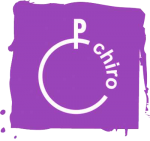
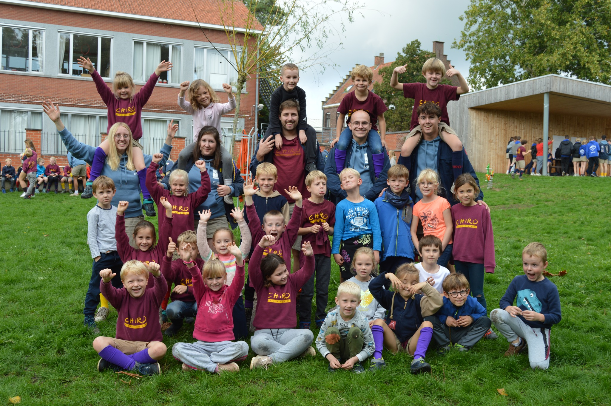
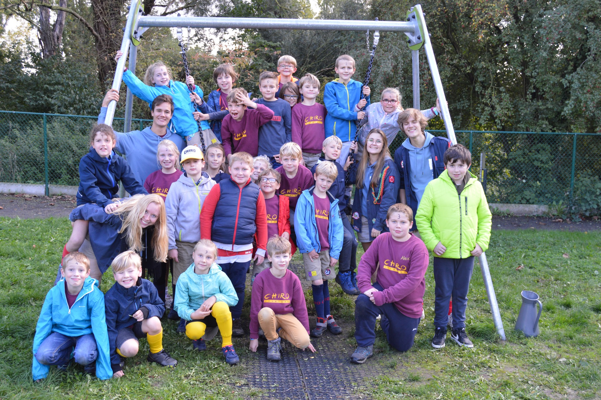
Speelclubbers houden van spelen, zo simpel is dat! Ze ontdekken de wereld en zijn onnoemelijk nieuwsgierig. Ze dollen en rennen door het bos, verkleden zich en kruipen allemaal samen voor of zelfs in de poppenkast. Of ze trekken eropuit voor een tocht vol spelletjes, plezante liedjes en gekke opdrachten. Ze worden ook al wat mondiger: de leiding zal het geweten hebben! Bij de speelclub leren kinderen al wat meer samen spelen. Vriendschappen ontstaan, banden worden gesmeed.
leiding
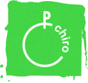
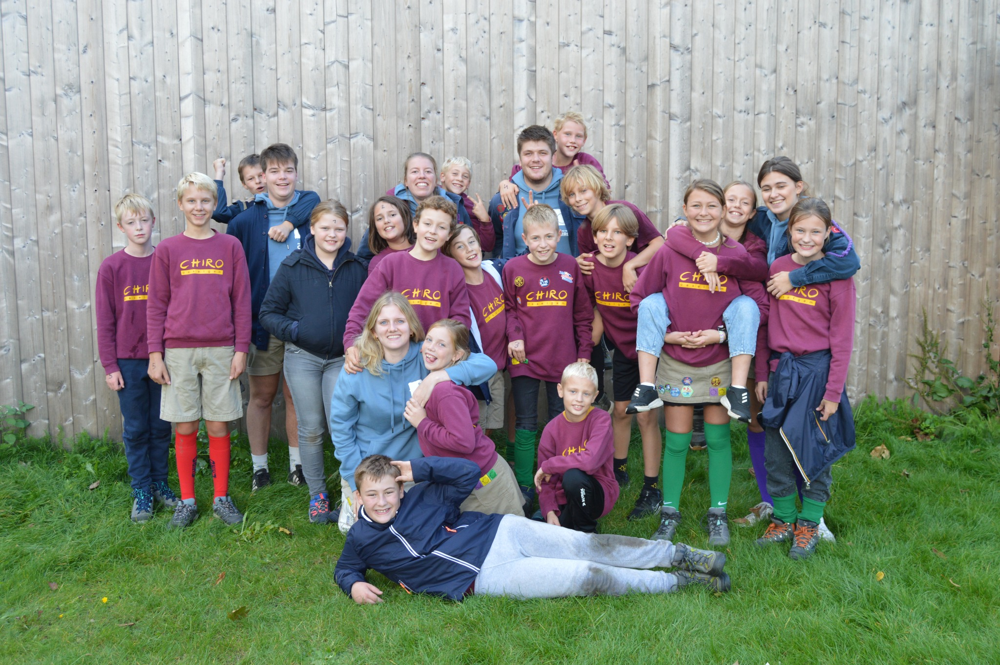
De 11- tot 12-jarigen hangen samen met hun rakwileiding de aap uit. Ze ravotten zich te pletter, trekken eropuit met de fiets en lopen zich de ziel uit het lijf bij een supergroot bosspel. Soms maken ze de gekste creaturen in klei en verkleden ze zich in monsters en draken. Regen en wind houden hen niet tegen om buiten te ravotten. Het liefst springen ze dan nog in een grote plas om lekker vuil te worden. Rakwi’s zijn sterk in het verzamelen van heel wat speledingen, waarmee de leiding toffe spelen verzint. De spelletjes worden avontuurlijker en het knutselen & gezelschapspelen worden vervangen door ravotten in de modder en het bouwen van kampen.
leiding
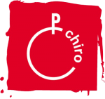
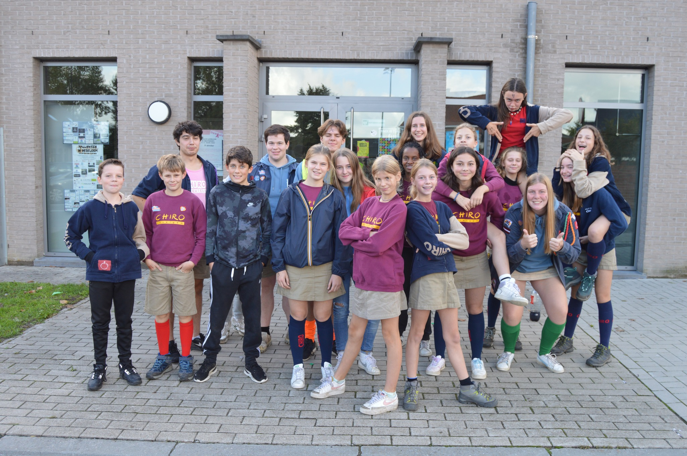
De tito's (13-14 jaar) trekken eropuit met de fiets of met de trein om in de een of andere stad een groot zoekspel te doen. Keihard ertegenaan gaan in een pleinspel en graag winnen, door tactiek of door snelheid. Stilvallen om de laatste stand van zaken in voetballand te bespreken of te zwijmelen over een superster of over die ene knappe jongen van op school, hoort erbij. Ze schminken zich om het gekst voor een show en zomerse zondagen eindigen steevast in een waterfestijn. De sjiekste Chiromomenten worden natuurlijk vastgelegd op sociale media. Kortom: typisch tito’s. De kleur van de tito’s is rood, het rood van de passie, vurigheid, liefde? We zullen zien ;)
leiding
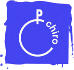
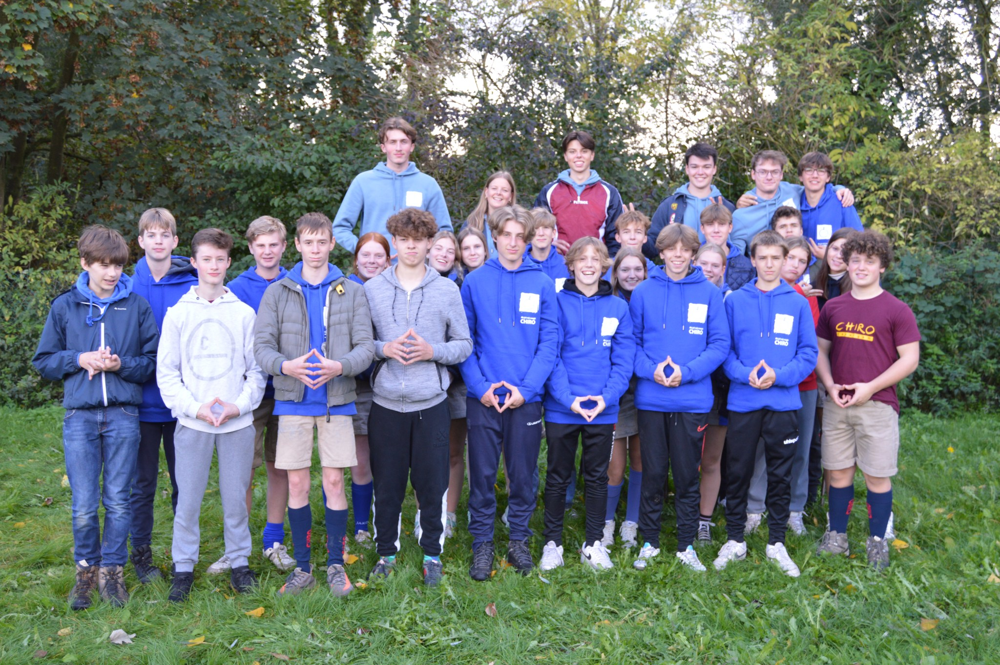
De keti's (15-16) trekken op avontuur, doen een tweedaagse tocht in de natuur met de rugzak of bouwen zelf een vlot om de rivier over te steken. Als 2de oudste Chirogroep helpen ze tijdens het jaar mee aan bepaalde evenement zoals de carwash en de lentemarkt. Hierdoor kunnen ze genoeg geld inzamelen om super leuke activiteiten te doen op kamp. Het jaarlijks kamp start voor de Keti’s 2 dagen vroeger, omdat ze met de fiets door het land trekken richting de kampplaats! De dagtocht is bij de Keti’s veranderd in een zalige 2-daagse waarop ze uiteenlopende activiteiten doen: eens gaan kajakken, een festivalletje doen, gaan paintballen, een pretpark bezoeken,…
leiding
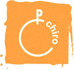
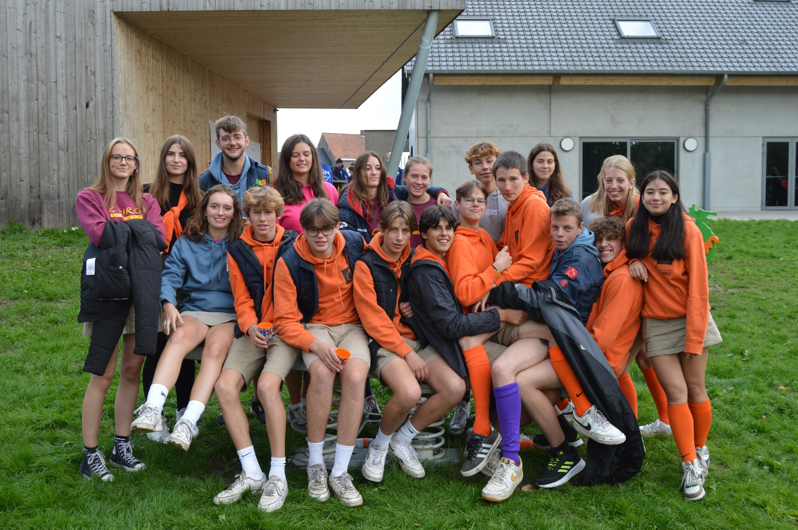
De oudste afdeling (17-18 jaar) neemt het er goed van en wisselt hevige spelen af met stevige babbels in het gezelligste hoekje van het lokaal. ze organiseren een aspifuif en leven ze een week op de Chiro tijdens een leefweek. Op bivak gaan ze zelfs op driedaagse! Kortom: de aspi-jaren zijn de kers op de taart van jaren lid zijn bij de Chiro!. Naast dat alles worden ze ook nog een laatste jaar klaargestoomd om ons leidersteam volgend jaar te versterken.
leiding